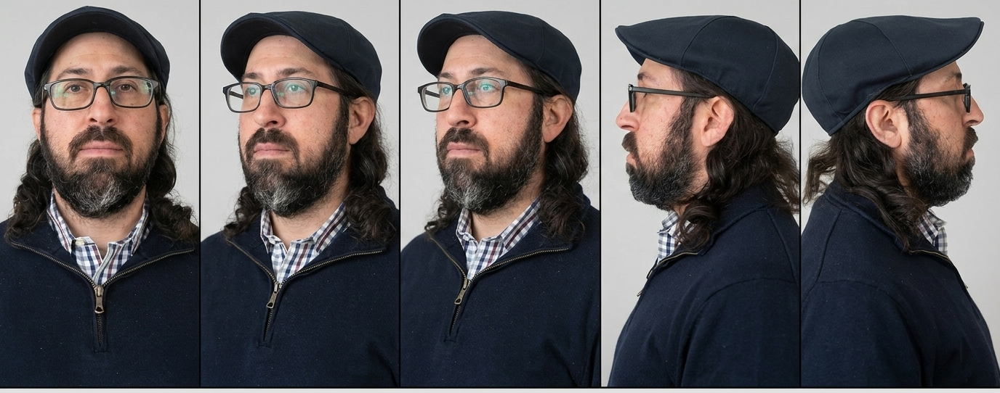
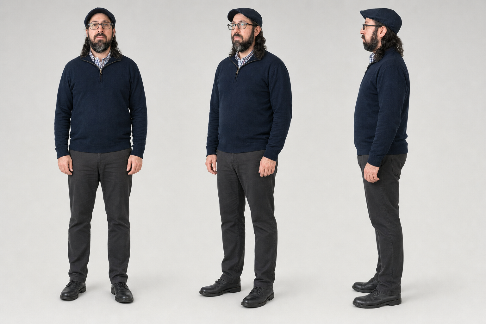
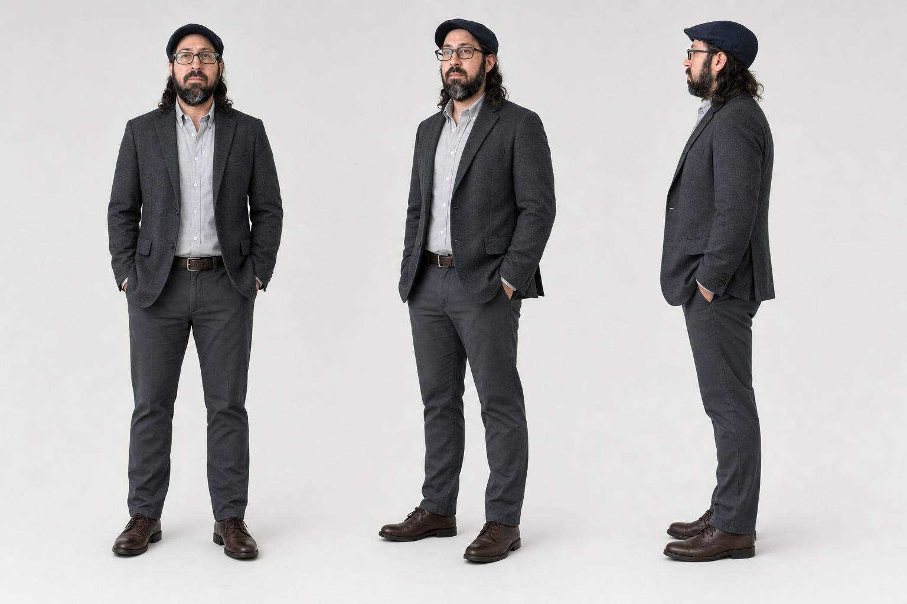

Section B
Personal Branding
Use Adam's presence, Character Sheet, wardrobe, and photography consistently.
01
How Adam shows up
Presence
Calm operator peer energy. Present in the room, exact, lightly witty.
Wardrobe
Primary Direction 2 operator outfit locked; bizcasual is alternate only.
Behavior
Do the work: explain, listen, review evidence, hand off a finding.
Aesthetic
Bright Paper White operations world with Cable Cobalt connection cues.
02
Character Sheet



03
Photography range
Approved face-gated scenes. Same man, different jobs.
04
How to use it
- Use the approved face canon for any recognizable Adam image
- Pick from the photography range. Do not recycle one hero for every surface
- Default to the navy quarter-zip operator outfit
- Show Adam in conversation or work with operators
- Never upload the temporary stylescape as a likeness seed